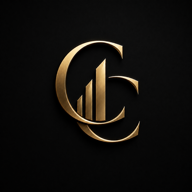
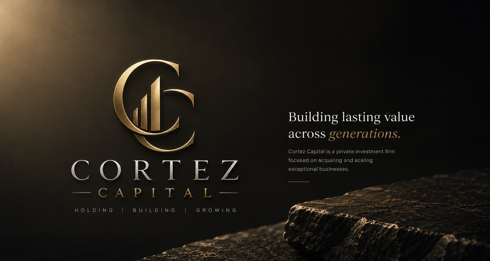
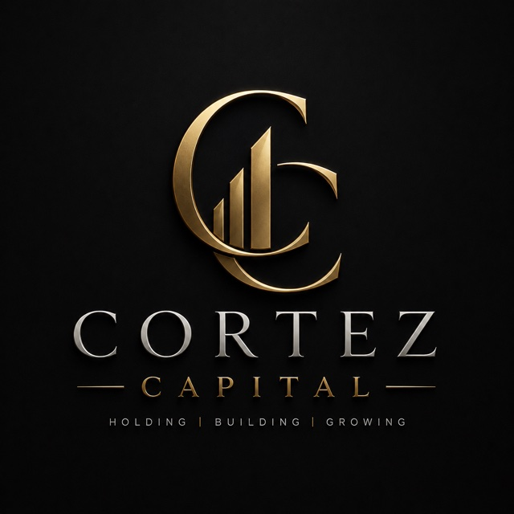

Holding
Patient ownership.
A longer horizon creates room to understand the business, respect its history, and consider decisions in context.

Cortez Capital
Holding. Building. Growing.
A long-term point of view
A fictional holding-company concept rooted in patient ownership, operating discipline, and Kentucky character.
About Cortez Capital
What is worth preserving?
What could be stronger?
Those questions shape this imagined Kentucky-rooted holding company. The narrative starts with respect for the people, relationships, and everyday work behind a business.
The philosophy is deliberately quiet: protect what works, improve what matters, and consider the next chapter with care.
The approach
Clarity over complexity. Relationships over transactions. Operating judgment over short-term pressure.
Holding
A longer horizon creates room to understand the business, respect its history, and consider decisions in context.
Building
Useful systems, clear responsibilities, and steady communication make a stronger foundation for the everyday.
Growing
Strengthen what makes a business valuable without losing the character and relationships that brought it here.
Areas of interest
Explore three illustrative ownership perspectives. These scenarios describe the concept’s thinking, not actual portfolio holdings or investment opportunities.
Illustrative focus / 01
Businesses people depend on, with work that has a clear purpose in the everyday.
Illustrative focus / 02
Locally rooted businesses whose relationships and practical knowledge connect a wider region.
Illustrative focus / 03
A business story moving into a new chapter, with care for the knowledge and relationships already built.

Stewardship
An owner-operator perspective begins with listening. Understand the people, the knowledge, and the relationships before deciding what should change.
That sense of proportion is the foundation of the Cortez Capital concept.
Return to the philosophyA Rogers Holdings design demonstration
Cortez Capital is a fictional business and website design demonstration by Rogers Holdings LLC. The supplied artwork and all business descriptions belong to this concept. No investment or advisory services, actual holdings, transactions, client results, or operating history are represented. Inquiries and confidential submissions are unavailable.
Return to Our Work